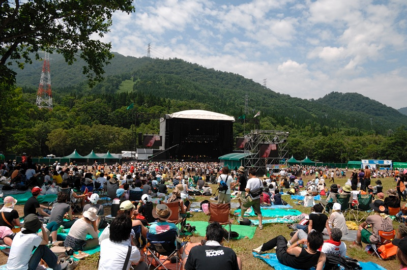
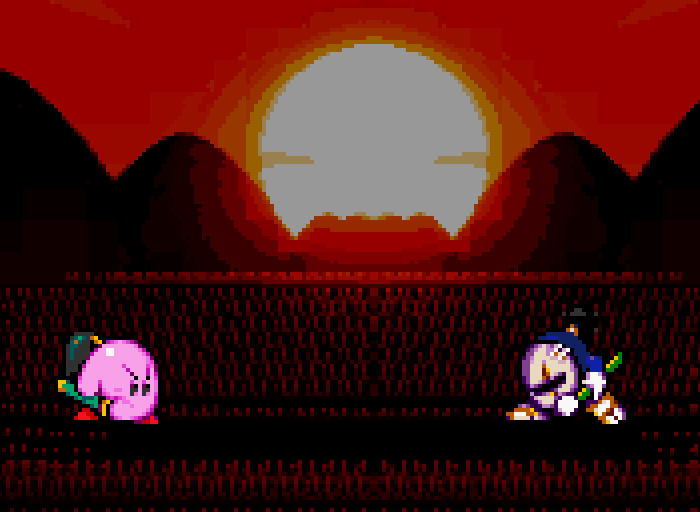

MY SUBCALPERSONAL CULTURE ARCHIVEVOL. 01 / SINCE 1990
THE THINGS THAT MADE ME
好きなものが、
今の自分を
つくっている。
夢中になったゲーム。何度も聴いた音楽。
忘れられない映画と、あの頃のこと。
好きの記憶をたどる、個人的なサブカル年表。


A WALK THROUGH MY MEMORIES
好きの記録。
1990 — 2023